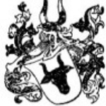

115434 Knut Kappe
Rådman i Åbo.
Död:
1556 Åbo, Finland. [1]
Barn med 115435 Margareta Nilsdotter Muurla (1490? - 1558)
Barn:
Noteringar
Knut Kappe, borgare i
Åbo. Var rådman
därstädes 1544(1). Adlad 1551,
fick frälsefrihet på de gods
och gårdar som tillfallit
honom med hans hustru (2),
s. å. till konung Gustaf, som gengäld
för denna förmån, sitt gods Virila i Nousis
socken. Egde Stor Poikko i Rimito socken, med
sin hustrus systers man, borgmästaren i Åbo,
Simon Nilsson (4); — † 1556, begrafven i Åbo
domkyrka, med alla klockor (5). — Gift före
1534 (6) med Margareta Nilsdotter, i hennes
l:a gifte † 1558 i barnsäng (7); — dotter af
borgaren i Åbo, Nils Muurla, och Elin Stensdotter
Finne, uradel. Hon blef omgift 1557 med Per
Fleming, n:r 4, till Friskala.
Jully Ramsay: Frälsesläkter i Finland intill stora ofreden / s. 228
Personhistoria
Årtal
Ålder
Händelse
1490?
Partnern 115435 Margareta Nilsdotter Muurla föds omkring 1490 Åbo, Finland [1]
1510?
Dottern 57717 Malin Knutsdotter Kappe Agricola till Bogård föds omkring 1510 Åbo, Finland [1]
1530?
Barnbarnet 28858 Elias Simoni (Simonsson) föds omkring 1530 Viipuri, Finland [2]
1556
Död 1556 Åbo, Finland [1]
Bilder

Källor
[1]
Jouni Ruohonen
[2]
Erkki Tikkanen